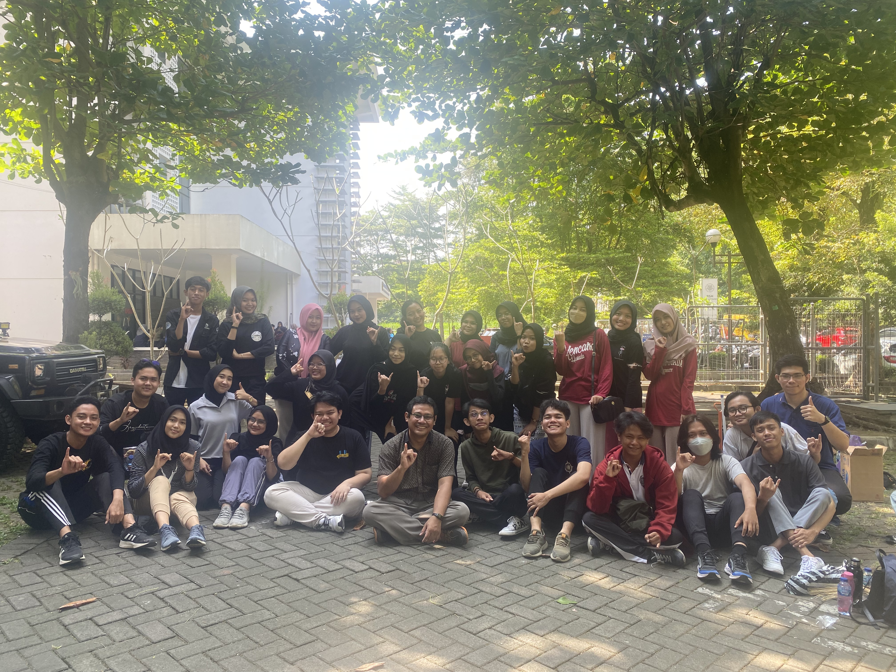
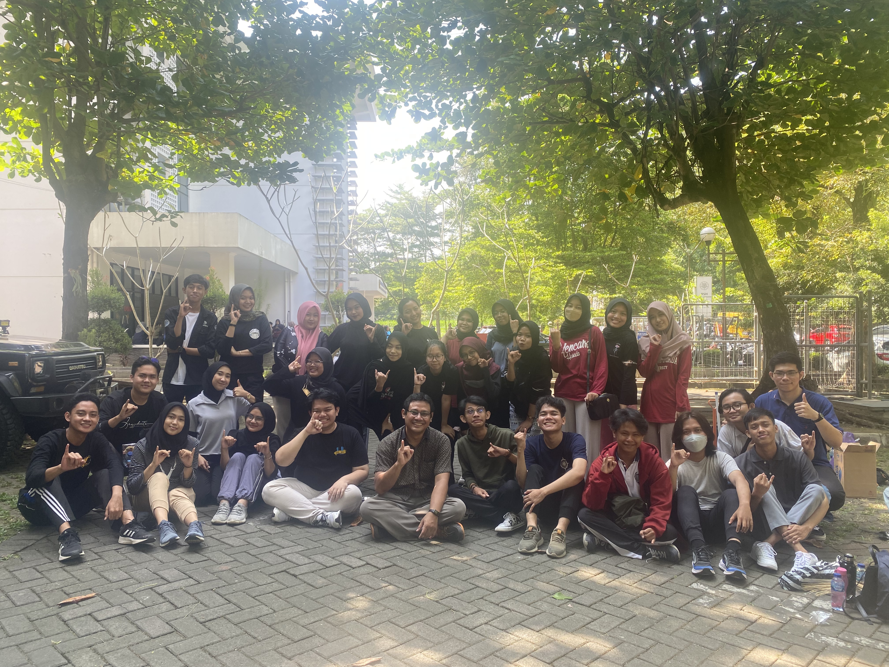

Tentang
Situs Web
Situs web pesonakamojang.com merupakan situs web promosi Taman Wisata Alam Kawah Kamojang
Tentang
Situs Web
Situs web ini dibangun oleh Vito Hartanto sebagai Front-end Developer dan Yulia Gerhana Wulandari sebagai Pemateri Konten. Situs web ini merupakan realisasi program kerja interdisipliner KKN UGM Pesona Ibun 2023.
Special
Credits
Kepada Bpk. Ir. Deva Fosterharoldas Swasto, S.T., M.Sc., Ph.D., IPM. selaku DPL (Dosen Pembimbing Lapangan) KKN UGM Ibun 2023 yang selalu ramah, murah senyum, dan kooperatif.